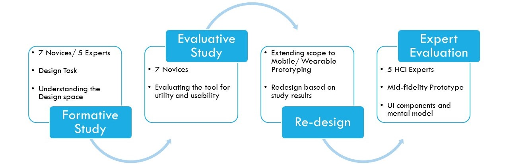

Mogeste
Motion-Based Mobile/Wearable Experience prototyping
Mogeste is a motion-based mobile prototyping tool for designers which leverages existing interface prototyping paradigm and allows its users to use motion gestures as an interaction modality for their applications. The tool supports most commercial wearable devices and uses the inertial sensor data to build gesture recognisers on the fly.
My role: This was an ongoing project at Ubicomp Lab, Georgia Tech. under the guidance of Prof. Gregory Abowd. My role was to understand the design space of motion gestures and embed the implemented motion-gesture prototyping piece into larger mobile experience design process.
Motivation: The need and motivation for a mobile/wearable experience prototyping tool supporting motion gesture prototyping came from the following understanding. If motion gestures were to become a common interaction modality, the underlying question was how to equip designers with tools that can support the motion gesture design process.


{kind=link}
Process: To answer the question and validate the need for an intervention, an iterative user centered design process was followed to collect user requirements, understand motion gesture design space, evaluate the implemented prototype, extend the scope to larger mobile interface prototyping and conduct an expert evaluation of the UI elements.
{kind=link}
Understanding the Motion gesture design Space
Being new to the motion gesture design myself, it was difficult to wrap my head around different aspects of the design process. To better understand the process followed by designers while designing motion gestures, two studies were conducted with 5 industry professionals and 12 novices.

User study- Novices: An activity-based study was conducted 7 novices who were 2nd year MS-HCI students who were exposed to design process but not necessarily motion gesture design. During the design task, they were asked to design 3 motion gestures for 2 common tasks of placing a phone call and ending the call using a smartphone. The task was followed by a semi structure interview probing deeper into their design, prototyping and evaluation process.
Industry Professional
A semi structured interview was conducted with 5 industry professionals from a large software company who have developed motion gestures for commercial wearable devices. The participants included both interaction designers and machine learning experts. The study lasted for 1 hour (avg.).
Using the grounded theory, the data from 12 participants was open coded and the themes emerged around the gesture design, implementation and stakeholder involvement in the process.

With the help of the themes and existing literature on prototyping tools, we identified 14 critical dimensions along which a gesture prototyping tool can be evaluated. These dimensions represent a design space that is useful for describing, evaluating, and generating motion gesture prototyping tools. To demonstrate the coverage of the design space, we also classified existing systems reviewed in the related work based on the design space placing the earlier version of Mogeste alongside the dimensions.
User Testing
After identifying the design space, we wanted to evaluate the already implemented tool against the dimensions and also for it's usability. With that goal in mind, we conducted a user testing with the same 7 novices and asked them to prototype the 6 gestures they had designed in the design task using the implemented tool. They were given a walk through of the tool prior to the tool use and asked a few questions as a follow-up to the study probing deeper about their experience, likes and dislikes with the tool.
{kind=link}
The Tool
The tool allows the user to record the intended gesture, runs background processes churning out a goodness score and allows the user to test the gesture if it's getting detected. Mogeste is designed to provide a 2 second time interval for the user to record the sample and the gesture is represented using the line chart showing sensor data along different axes. The video gives an idea of how the tool works.

Participant Response
The Good!
We received a positive response from all our participants. They said the tool saves them time, is easy to learn and use and they don't have to code anything. They said it was cool, powerful and accurate. The most important insight was that our participants felt empowered after using the tool since all the participants mentioned a reliance over developers to help them build the gesture recogniser. They suggested that the tool is great for initial validation of ideas and rapid testing.
“I could show developer that this gesture is doable.”
“I wouldn't have been able to do activity recognition myself. It took care of all that.”
Opportunities
There were certain things that the participants faced problems with. The recording mechanics of Gesture Start and end Position, Recording Duration and getting Recording Feedback was confusing to some users.
They also did not understand the gesture playback after recording which was represented as a line chart. They said that although it seems useful, they do not understand what it does.
Another lingering question for some participants was “How many samples are enough?” They weren’t sure when to provide more examples or how many of them were enough.
Some participants suggested embedding the tool within larger mobile experience design.
Based on these insights we moved forward and broadened the scope from motion gesture prototyping to mobile/wearable experience prototyping tool. The earlier implemented version was a standalone motion gesture prototyping tool. But gesture design is just a part of larger mobile experience design. Thus, we shifted gears and embedded the implemented prototyping piece within a larger mobile interface prototyping tool that:
- Leverages interface prototyping paradigm of existing tools like Pop, marvel, pixate, etc. using motion gesture as an interaction Modality.
- Allows Motion gesture recording, testing and analysis.
Design
The new mobile/wearable interface prototyping tool has two major pieces.Interface Prototyping
Device 1: Running Core Mogeste Application + Video recording
Motion Gesture Prototyping
Device 2: Peripheral Device for Performing Gesture
The concept was iteratively designed using paper prototypes and mockups. Finally, the UI was designed using Android Material design guidelines.
{kind=link}
{kind=link}
Expert Evaluations
After designing the interface a mid-fidelity prototype was built and tested by 5 HCI experts. The goal of the study was to evaluate the UI components of the interface and test if the user mental model would match the system model. The experts were asked to use the tool and evaluate it against mobile interface heuristics. Some of the screens from the prototype are shown here.

Recommendations
Interface Prototyping Piece: The experts found the tool consistent with the material design principles. They found the tool familiar with the existing flow of prototyping tools. It was easy for them to navigate and they felt when the tool would be functional it would be efficient.
Motion Gesture Prototyping Piece: There were some concerns in the motion prototyping piece. The experts suggested having a better story telling around it to help the user understand the importance of samples. There should also be better handholding along this piece since this is not something that they have used before. Sensor playback was still difficult to understand despite adding the video of the gesture. There were also some feature suggestions around sample level comparison and supporting test-logs.
Learnings and Future Direction
The major takeaway for the project was to understand the motion gesture design space and process. It is interesting how early inputs can trigger gesture search and enable better design decisions. To add to the tool, an everyday gesture library can be built which gives real-time feedback to the designer if the gesture would be confused with everyday action and also provide some common examples of the gestures to the designer to being their gesture search. I conducted an gesture elicitation study with 12 groups (of 2 each) each for wrist-worn and head-mounted devices wherein each group designed gestures for common tasks done on mobile devices. I hypothesize, that results from the study will impact the future design and feature the tool would support.